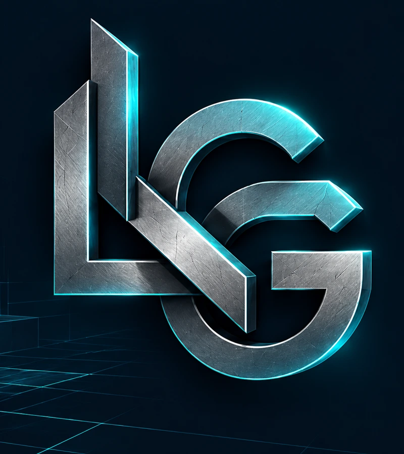

Unity
Motor de Laberinto V2 y Plane Simulator.
MOTOR DE JUEGO
Diseñador 2D/3D, diseñador de niveles y programador
Estudio Diseño y Desarrollo de Videojuegos en UNIR. Me interesa crear niveles, mecánicas y prototipos, combinando diseño y programación. Busco incorporarme a un equipo mediante prácticas académicas supervisadas, aportar ideas y seguir aprendiendo en las distintas fases de producción.
Trabajo con Unity y Unreal Engine a nivel intermedio, programo en C#, C++, Python y SQL, y utilizo Blender y Krita. Completo mi flujo de trabajo con Visual Studio, GitHub y Jira, y estoy familiarizado con metodologías Agile.
Diseño y Desarrollo de Videojuegos
Estudio el Grado en Diseño y Desarrollo de Videojuegos en UNIR y busco prácticas académicas supervisadas.
Me interesan el diseño y ambientación de niveles, la programación, el modelaje y el diseño 2D/3D. Quiero aportar mis ideas, aplicar mis conocimientos y seguir aprendiendo en un equipo profesional.
He colaborado en proyectos universitarios en equipos de hasta seis personas. Aporto comunicación clara, organización y una actitud abierta al feedback, con compromiso con los plazos y capacidad de adaptación.
Motor de Laberinto V2 y Plane Simulator.
MOTOR DE JUEGOTres proyectos disponibles para jugar en itch.io.
PLATAFORMA HTML5Diamond Rush: una propuesta para un jugador.
EXPLORAR EL PROYECTOMotor con el que desarrollé They Won’t Retain Me.
MOTOR DE JUEGOUna selección de mis trabajos de diseño, con dibujos y animaciones realizados con Krita y Blender, y niveles diseñados en Unity y Unreal Engine.
¿Tienes un proyecto en mente o una oportunidad para colaborar? Contactemos para explorar cómo podemos trabajar juntos.